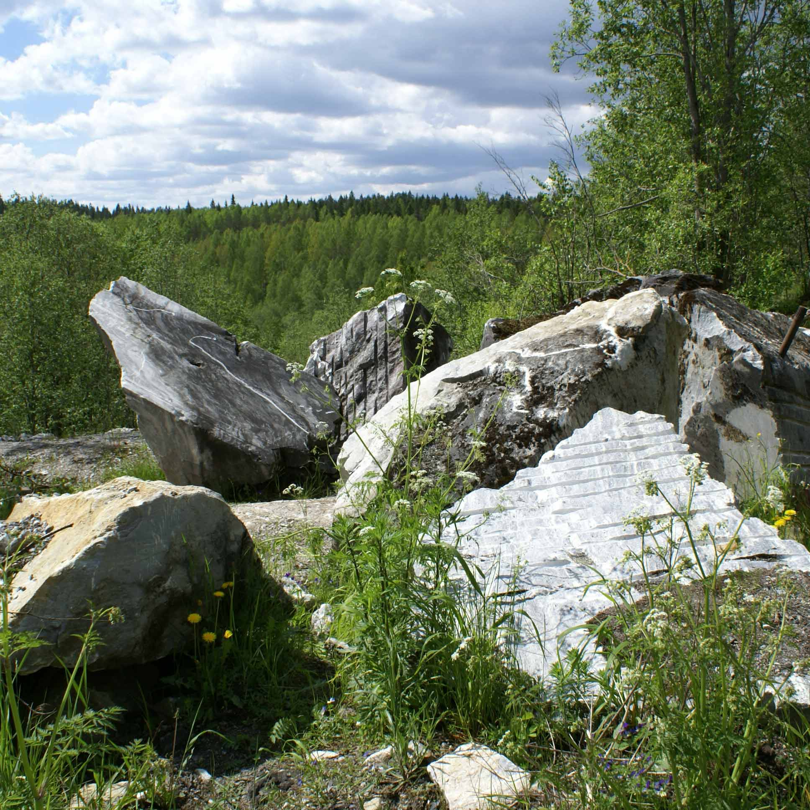

подпишитесь на горячие предложения
Природный парк "Рускеалла" –уникальная жемчужина Лапландии!
Живописные мраморные скалы отражаются в зеленоватой глади чистейших озёр! Рускеалла - символ возрождения карельской земли, символ гармонии человека и природы! Рускеалла – жемчужина Северного Приладожья!
Вас ждут уникальные экскурсионные маршруты Северо-Запада России: пешеходные, водные, подземные. Любителям экстрима предлагают невероятные возможности трекинга и верёвочного парка. Регулярно проходят экологические забеги и фестивали! Здесь вкусно угощают приобщая гостей к сакральным традициям карельской кухни! Из местного материала мастера создают великолепные сувениры, хранящие тепло умелых рук!
мраморный каньон
Замечательно подходит для знакомства с парком. Гостей ждёт главная локация
парка - мраморные склоны каньона. Познакомьтесь с историей горного
дела. На маршруте открыта мастерская по камнеобработке.
горные тропы
Экскурсия предлагает максимум в Рускеалла:
включает экскурсию «Мраморный каньон» и проходит по наземной части парка. Провал «мраморное сердце»
позволит заглянуть в подземною часть парка.
прогулка по воде
Водная прогулка по мраморному каньону оставит незабываемые впечатления и
позволит насладится видами на каньон и красотами мраморных пещер, которые доступны только из воды.

зыбучие камни
зыбучие камни
Каменоломни, обнаруженные членом Вольного экономического
общества Самуилом Алопеусом, начали разрабатываться в 1765 году.
Первыми разработками руководили итальянские специалисты.
Заяцкий остров
Каменные лабиринты на Большом Заяцком острове — это группа из 13 или 14 лабиринтов.
Кроме этого на данном острове есть более чем 850 искусственных нагромождений валунов, курганов, каменных
выкладок.

мертвое озеро
Озеро представляет собой углубление на вершине соляной горы. Многочисленные ключи
впадают в озеро,
принося в течение суток в озеро более 2,5 тысяч тонн солей..
Мы в Instagram
#рускеала